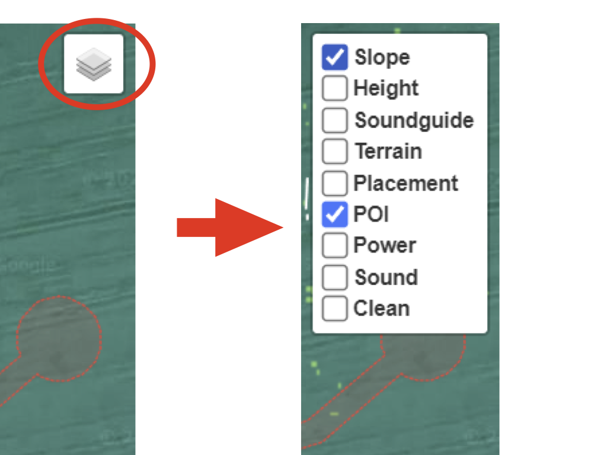

“What do camps need to make better decisions on placement?”
👋 Hello! You’re here because you want to place your camp somewhere at The Borderland! Placement is an important part of co-creating The Borderland and supports project planning, site logistics, and safety (mainly fire regulations).
It’s also a collaborative process where we all work together to decide what camps, dreams, and experiences go where!
⚠️ Before you dive into the Placement Tool, it’s important to understand that collaboration means there are no “first-come, first-served” rights to being placed on the map.
Nothing is final just because someone was there first. Rather, communication, negotiation, and co-creation are essential to Placement.
💬Please start conversations with your fellow Borderlings about how to organize the neighborhood you’d like to be in. If your camp is open to more collaboration beyond friendly neighborhood relationships, consider curating a plaza with other camps and/or set up communication among the camps in the kvarter (your direct neighbors).
🙅♂️If Discord isn’t your thing, feel free to start conversations anywhere else, but definitely have someone in your camp check the Discord for an existing conversation about the neighborhood you’d like to be placed in, just so there are no surprises!

🛠️Some lovely techy Borderlings have built a handy Placement Tool for everyone to place their camps: https://www.theborderland.se/map
🗺️When the process starts, you will be able to draw your camp on the map according to these instructions:
🔥While editing your shape, pay attention to the thin dotted black line around your shape. That is the "fire buffer", and is drawn 5 meters away. This tool is to help guide you and applies mainly to large camps, kitchens, and other fire hazards. If you're placing small camps or sleeping spots, use common sense. And remember to design some space for paths so fellow borderlings intuitively know where it's safe to walk :)

🍰Make sure to check out the slope map, soundmap, heightmap and a bunch of other layers in the top right menu!

There are many things to consider when placing your camp. Here are some examples:
Can I only make one shape?
No, you can make more shapes, if you need to. It can even be good to differentiate
between your camp’s living areas and your more "public facing" activities and dreams.
The fire roads (red) or walkways (blue)are blocking my plans! Can we change them?
A lot of care and thought
have gone into the road placement. The fire roads are required to be present. The walkways contribute to
accessibility and connections. However, if you have a good reason to change them, please raise the topic on Discord
or Talk and we can discuss it.
Do I have to fill in contact info?
Yes, it’s important for others to be able to communicate with you!
Also, if your camp needs to be moved due to some unforeseen fire road adjustment, you might want to be notified...
How am I supposed to set up camp once arriving at The Borderland
You will have to carefully measure from the
main fire roads, that will be marked beforehand by a group of people (Help needed!). Bring a measuring tape, and a
string. Use the measure tool in the map to get the right distances. We will add some named "control points" both to
the map and in reality, to help out when far away from fire roads.
It's a very long way to the toilets on the far end of the field!!
Yes indeed it is! Place yourself closer to
the toilets if you don't want to walk that far. Pooing in the bushes is a no-no and you will be eaten by the
Narwhals if you do. You could also organize extra toilets in the field if that tickles your fancy.
What is The Borderland Shuffle?
It's when we mess up the placement and have to move everything around. It's a
lot of work and a lot of fun. The map is not the territory, people often confuse models of reality with reality
itself you see (see Alfred Korzybski).
I want to be involved in a plaza, how does it work?
Try to bring a few camps together that have the same
vision and level of engagement. Start a discussion on Discord expressing your interest in curating the plaza. This
is the first year we are trying this so trial and error are likely to happen. There is no need to get permission and
no option to claim the space, rather collaboration is encouraged around plazas.
I don't have a camp, how do I proceed?
If you want to join a camp you can look for a camp with open spots. You
can also ask on
the Discord channel 😻camp-matchmaking, or have a look in the Facebook group The Borderland Camp Matchmaking Agency.
I will go and create my own camp, but with blackjack and hookers...
Great! Make sure to pick a spot for it in
the placement map. And if you seek members, spread the word in the above channels.
I'm so radical and self-reliant that I don't belong in a camp!
The concept is called freecamping and if you're
taking up somewhat of a space that could be taken by other camps you should also use the placement process.
Some
freecampers still do cooking together and reserve a bigger area for freecampers, feel free to find other freecampers
at the
Discord channel 🐺freecampers-cartel for further information.
My question was not answered here!
Oh my! Go to the
Discord channel ⛳placement-general, and ask it there! Maybe someone has an answer.
The Borderland Placement Tool was based on
Leaflet. Please give them your support!